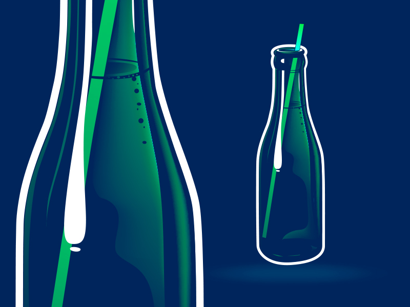

Kan Doku
Kan doku %55 kan plazması %45 kan hücrelerinden oluşur. Kan plazmasının içinde bulunan maddeler:

Su
Maddeleri taşıyan çözücüdür.

İyonlar
Sodyum, potasyum, birkarbonat, kalsiyum, magnezyum, klordur. Ozmotik dengeyi sağlar. pH'ın düzenlenmesine yardımcı olurlar.

Plazma proteinleri
Albümin, fibrinojen, gloubin , immünoglubülin, kanda ossmotik dengeyi, pH düzenlenmesinde, pıhtılaşma ve savunmada görev alır.
Geri
İleri